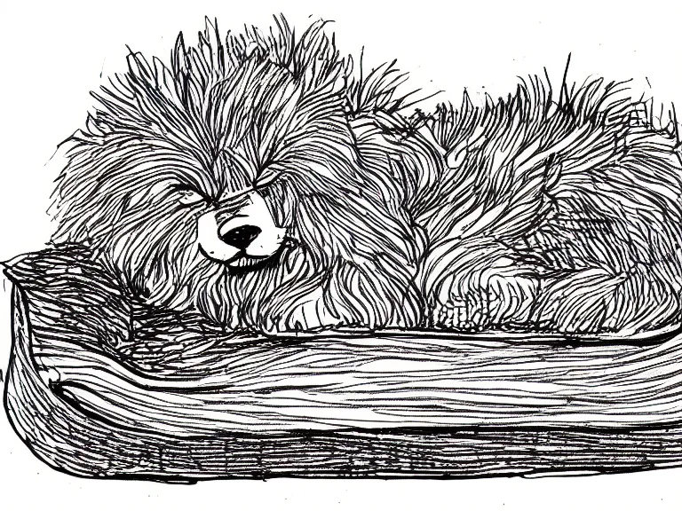
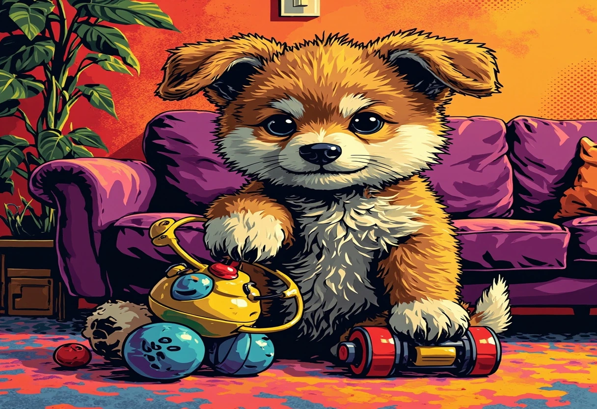

Der große Tag ist endlich gekommen: Dein Welpe zieht bei Dir ein! Die Vorfreude war riesig – das neue Körbchen steht bereit, die Näpfe sind gefüllt, und das erste Spielzeug liegt parat. Doch jetzt, wo der kleine Vierbeiner tatsächlich vor Dir steht, kommen vielleicht auch die ersten Fragezeichen auf: Wie läuft die erste Nacht? Was, wenn er nicht ins Körbchen will? Wann beginnt man mit der Stubenreinheit? Und vor allem: Wie vermeidet man, den Welpen in den ersten Tagen zu überfordern?
Keine Sorge – genau dafür gibt es diesen Artikel. Die erste Woche mit Deinem Welpen legt den Grundstein für eine vertrauensvolle Beziehung, die Euch die nächsten vielen Jahre begleiten wird. Sie ist aufregend, manchmal anstrengend, aber vor allem wunderschön. Mit dem richtigen Plan an Deiner Seite wird die Eingewöhnung für Dich und Deinen neuen Freund zu einem sanften, liebevollen Start ins gemeinsame Leben.
Dieser 7-Tage-Schritt-für-Schritt-Plan begleitet Dich durch die wichtigsten ersten Tage. Er basiert auf den Erfahrungen von Hundetrainern, Tierärzten und erfahrenen Hundehaltern. Du bekommst konkrete Tagespläne, praktische Anleitungen für Stubenreinheit und erste Kommandos sowie hilfreiche Tipps, um typische Anfängerfehler zu vermeiden. Der Fokus liegt immer auf positiver Verstärkung, Geduld und liebevoller Konsequenz. Denn ein glücklicher Welpe, der sich sicher und geborgen fühlt, entwickelt sich zu einem selbstbewussten und ausgeglichenen erwachsenen Hund.
Bevor es mit Tag 1 losgeht, ein wichtiger Hinweis: Jeder Welpe ist anders. Manche sind neugierig und stürmen sofort los, andere sind schüchtern und brauchen Zeit. Passe den Plan an das Tempo Deines Hundes an. Die hier vorgeschlagenen Abläufe sind eine Orientierung – folge Deinem Bauchgefühl und vor allem den Signalen Deines Welpen. Dann kann nichts schiefgehen!
🗓️ Tag 1: Ankunft und erste Erkundung
Der erste Tag – die erste Begegnung, die ersten Eindrücke. Für Deinen Welpen ist alles neu, aufregend und vielleicht auch ein bisschen beängstigend. Stell Dir vor, Du kommst in ein fremdes Land, dessen Sprache Du nicht sprichst, dessen Gerüche Du nicht kennst und dessen Bewohner riesig sind. Genau so fühlt sich Dein Welpe. Deshalb ist Tag 1 vor allem eines: ruhig, sanft und einladend.
Die Wohnung vorbereiten – bevor der Welpe kommt
Die Vorbereitung beginnt schon Tage vor der Ankunft. Deine Wohnung sollte welpensicher sein. Das bedeutet: Kabel und Stromleitungen sind außer Reichweite oder in Kabelschläuchen versteckt. Herabhängende Tischdecken – weg damit, denn sie laden zum Ziehen ein. Putzmittel, Medikamente und giftige Zimmerpflanzen kommen in geschlossene Schränke. Mülleimer sollten einen Deckel haben. Schaffe einen sicheren Rückzugsort – eine ruhige Ecke, in die sich Dein Welpe zurückziehen kann, wenn ihm alles zu viel wird. Das kann eine Welpenbox oder ein abgetrennter Bereich mit seinem Körbchen sein.
Die erste Begegnung – ein sanfter Start
Dein Welpe kommt wahrscheinlich nach einer Autofahrt bei Dir an. Er ist vielleicht müde, aufgeregt oder verunsichert. Bringe ihn direkt zu der Stelle, an der Du ihn das erste Mal „seine Geschäfte“ erledigen lassen möchtest – im Idealfall direkt nach draußen. Wenn er dort Pipi macht, überschütte ihn mit Lob! Dann geht es hinein in die Wohnung. Setze ihn ruhig ab und lass ihn auf eigenen Pfoten die neue Umgebung erkunden. Gehe in die Hocke und warte ab. Dein Welpe wird zu Dir kommen, wenn er bereit ist. Zwinge ihn nicht, alle Räume auf einmal zu sehen. Ein oder zwei Zimmer am ersten Tag sind völlig ausreichend.
Nicht überfordern – die goldene Regel der ersten Stunden
Die häufigste Fehlerquelle in den ersten Stunden: zu viel Trubel. Keine Welpen-Party am ersten Tag! Keine Nachbarn, die „nur mal kurz Hallo sagen“ wollen, keine Kinder, die den Welpen durch die Wohnung jagen. Dein Welpe braucht Zeit, um Dich, die Geräusche der Wohnung, die neuen Gerüche und die unbekannten Menschen in seinem Tempo kennenzulernen. Beschränke den Besuch in den ersten 24 Stunden auf die Kernfamilie. Auch die erste Fütterung sollte bewusst ruhig ablaufen: Gib ihm das Futter, das er vom Züchter gewohnt ist (Futterumstellung immer langsam über mehrere Tage!), am besten aus der Hand, um Vertrauen aufzubauen.
Wichtige To-dos für Tag 1
- Erste Tierarzt-Terminplanung: Rufe noch am ersten Tag den Tierarzt an, um einen Termin für die Erstuntersuchung zu vereinbaren.
- Namen eingewöhnen: Sprich Deinen Welpen immer wieder mit seinem Namen an – verbunden mit Streicheleinheiten, Leckerlis oder Spiel.
- Schlafplatz zeigen: Lege Deinen Welpen sanft in sein Körbchen, wenn er müde wird. Ein Stofftier oder eine Wärmflasche (handwarm, nicht heiß) können ihn an die Wärme der Wurfgeschwister erinnern.
- Erste Gassirunde (ganz kurz): Nur vor die Tür, damit er den Weg zum Gassi-Platz kennenlernt. Keine langen Spaziergänge – Dein Welpe hat noch nicht alle Impfungen und sollte nur kontrollierte Umgebungen erkunden.

🗓️ Tag 2: Routine und erster Tagesablauf
Der zweite Tag steht ganz im Zeichen der Routine. Hunde sind Gewohnheitstiere – und nichts gibt einem Welpen mehr Sicherheit als ein vorhersehbarer Tagesablauf. Wenn Dein Welpe weiß, wann es Futter gibt, wann Gassi geht und wann Ruhezeit ist, wird er schnell entspannen und Vertrauen fassen.
Feste Zeiten für Mahlzeiten entwickeln
Füttere Deinen Welpen drei- bis viermal täglich zu festen Zeiten – zum Beispiel 7:00 Uhr, 12:00 Uhr, 17:00 Uhr und 21:00 Uhr (bei sehr kleinen Rassen). Die Portionsgröße richtet sich nach der Rasse, dem Alter und dem Futtertyp. Die meisten Futtersorten haben eine Tabelle auf der Verpackung – orientiere Dich daran, aber beobachte Deinen Welpen: Ist er nach dem Futter noch hungrig? Dann die Menge etwas erhöhen. Bleibt Futter übrig? Etwas reduzieren. Wichtig: Die letzte Mahlzeit sollte etwa zwei Stunden vor dem Schlafengehen liegen, damit die Blase nicht übervoll ist.
Der erste strukturierte Tagesablauf
Ein typischer Tag könnte so aussehen:
- 06:30–07:00 Uhr: Aufstehen, sofort nach draußen gehen (Welpe wecken, wenn er noch schläft – er muss erst lernen, die Blase zu kontrollieren). Loben, wenn er Pipi macht.
- 07:00–07:15 Uhr: Frühstück.
- 07:15–07:45 Uhr: Kurze Spielzeit und Erkundung, dann nochmal raus.
- 07:45–09:30 Uhr: Ruhezeit / Schlaf im Körbchen.
- 09:30 Uhr: Rausgehen (sofort nach dem Aufwachen!), Pipi-Chance.
- 09:45–10:30 Uhr: Kurze Spieleinheit, Kennenlernen der Wohnung.
- 10:30–12:00 Uhr: Ruhephase.
- 12:00 Uhr: Mittagessen, dann raus.
- 12:30–14:30 Uhr: Mittagsschlaf.
- 14:30 Uhr: Raus, Pipi.
- 14:45–16:00 Uhr: Spiel und leichte Erkundung.
- 16:00–17:00 Uhr: Ruhe.
- 17:00 Uhr: Abendessen, dann raus.
- 17:30–19:00 Uhr: Gemeinsame Zeit, ruhiges Spielen.
- 19:00–20:30 Uhr: Ruhe, eventuell Schläfchen.
- 20:30 Uhr: Letzte Runde raus.
- 21:00–21:30 Uhr: Abendroutine – Kuscheln, letztes Spiel, ins Körbchen bringen.
Dieser Plan klingt streng, aber er ist als Rahmen gedacht. Passe die Zeiten Deinem eigenen Rhythmus an – Hauptsache, die Reihenfolge und die ungefähren Abstände bleiben gleich. Du wirst sehen: Schon nach zwei, drei Tagen „weiß“ Dein Welpe, was als Nächstes kommt, und wird ruhiger.
Erste kleine Spaziergänge – aber richtig!
Mit Welpen geht man nicht „Gassi“ im klassischen Sinne – zumindest nicht in den ersten Wochen. Ein Welpe sollte anfangs nur kurze Runden von 5 bis 10 Minuten machen, damit er die Umgebung kennenlernt. Das reicht völlig, um ihn zu sozialisieren und an die Leine zu gewöhnen. Achte darauf, dass Dein Welpe auf befestigten Wegen läuft und nicht mit fremden Hunden in Kontakt kommt, die ungeimpft oder krank sein könnten. Trag ihn über stark frequentierte Stellen oder unbekannte Rasenflächen, bis er die wichtigsten Impfungen hat. Nutze die Spaziergänge auch, um Deinen Welpen an verschiedene Untergründe zu gewöhnen: Asphalt, Wiese, Kies, Holzboden – alles gute Trainingsmöglichkeiten für die Pfoten.
📢 Google AdSense
Anzeige
🗓️ Tag 3: Stubenreinheit – Die ersten Erfolge
Stubenreinheit ist das Thema, das die meisten frischen Welpenbesitzer umtreibt. Und ja, es wird Unfälle geben – das ist normal und gehört zum Prozess dazu. Ein Welpe kann seine Blase noch nicht kontrollieren, bevor er etwa 12 bis 16 Wochen alt ist. Deine Aufgabe ist es, ihm so viele Erfolgserlebnisse wie möglich zu schenken, damit er lernt, wo er sein Geschäft erledigen soll.
Die goldene Regel: Vorbeugen statt bestrafen
Bestrafung hat bei der Stubenreinheit nichts zu suchen. Wenn Du einen Haufen auf dem Teppich findest, ist es zu spät zum Schimpfen – Dein Welpe versteht nicht, warum Du jetzt böse bist. Er denkt: „Mensch ist sauer, aber ich weiß nicht, warum. Vielleicht, weil er den Haufen gesehen hat? Dann verstecke ich mich nächstes Mal besser.“ Das Gegenteil von dem, was Du willst. Stattdessen: Beobachte Deinen Welpen genau, unterbrich ihn im richtigen Moment (nicht erschrecken, sondern freundlich „Komm mit!“ sagen) und lobe ihn überschwänglich, wenn er draußen macht.
Signale erkennen – Wann muss der Welpe raus?
Jeder Welpe zeigt bestimmte Signale, wenn er muss:
- Er läuft plötzlich im Kreis und schnüffelt intensiv am Boden.
- Er wird unruhig, winselt oder läuft zur Tür.
- Er setzt sich plötzlich hin oder geht in die Hocke.
- Er kratzt an der Tür oder stellt die Ohren auf.
Sobald Du eines dieser Signale siehst – sofort raus! Trag ihn notfalls, wenn die Leine noch nicht angelegt ist. Besser einmal zu viel draußen als ein Mal zu viel auf dem Teppich.
Die festen Pipi-Zeiten
Neben den Signalen gibt es feste Uhrzeiten, zu denen Du Deinen Welpen grundsätzlich nach draußen bringen solltest: direkt nach dem Aufwachen, nach jeder Mahlzeit, nach dem Spielen und vor dem Schlafengehen. Merk Dir den einfachen Merksatz: „Nach Schlaf, Futter, Spiel – raus, ganz viel Ziel!“
Wenn doch mal was danebengeht
Kein Drama! Reinige die Stelle mit einem enzymatischen Reiniger (kein Ammoniak!), der den Geruch neutralisiert. Dein Welpe riecht sonst den Urin auch nach dem Putzen und wird die Stelle wieder aufsuchen. Bleib geduldig – die allerwenigsten Welpen sind nach einer Woche stubenrein. Die meisten brauchen mehrere Wochen bis Monate. Tag 3 ist erst der Anfang, aber mit Konsequenz und Lob legst Du jetzt die Grundlage für schnelle Erfolge.
🗓️ Tag 4: Erste Kommandos spielerisch lernen
Nein, Du musst noch nicht mit der klassischen Hundeerziehung beginnen – aber spielerische erste Kommandos machen riesigen Spaß und stärken die Bindung. Dein Welpe ist jetzt seit drei Tagen bei Dir, hat die erste Eingewöhnung hinter sich und ist neugierig auf die Welt. Nutze diese Neugier!
Das erste Kommando: „Sitz“ als Spiel
„Sitz“ ist das einfachste Kommando für den Anfang. So geht's: Nimm ein besonders leckeres Leckerli (weich und klein, damit er schnell kauen kann) und halte es direkt vor seine Nase. Führe es langsam über seinen Kopf nach oben. Wenn Dein Welpe den Kopf hebt, um dem Leckerli zu folgen, setzt er sich automatisch hin – das ist eine natürliche Bewegung. In dem Moment, in dem sein Hinterteil den Boden berührt, sagst Du freudig „Sitz!“ und gibst ihm das Leckerli. Wiederhole das drei- bis fünfmal, dann mach eine Pause. Dein Welpe hat eine Aufmerksamkeitsspanne von maximal ein bis zwei Minuten – und das ist völlig in Ordnung.
„Platz“ – die nächste Stufe
Sobald „Sitz“ einigermaßen klappt (nach ein paar Tagen, nicht unbedingt am selben Tag!), kannst Du mit „Platz“ beginnen. Aus der Sitzposition führst Du ein Leckerli langsam zwischen den Vorderpfoten nach unten zum Boden. Dein Welpe wird sich nach vorne beugen und schließlich hinlegen. Das Wort „Platz“ sagst Du genau in dem Moment, in dem er die Ellenbogen auf den Boden legt. Belohnen nicht vergessen! Manche Welpen brauchen etwas länger für „Platz“ – keine Sorge, das ist normal.
„Hier“ – der sichere Rückruf
Der Rückruf ist das wichtigste Kommando für die Sicherheit Deines Hundes. Beginne zu Hause auf engem Raum. Gehe ein paar Schritte von Deinem Welpen weg, klatsche in die Hände und rufe fröhlich seinen Namen + „Hier!“ (oder „Komm!“). Wenn er zu Dir kommt – und das wird er, weil er Dir folgen will – überschütte ihn mit Lob und einem Leckerli. Alles muss positiv sein! Nie für „Hier“ schimpfen, selbst wenn er vorher etwas angestellt hat. Der Rückruf muss die beste Sache der Welt sein für Deinen Welpen.
Spielend lernen – Tipps für den Tag
Integriere die Übungen in den Spielalltag. Setz Dich auf den Boden, lass Deinen Welpen zu Dir kommen, sag spielerisch „Sitz“, belohne ihn, und dann geht das Spiel weiter. Fünf Minuten Training, fünfzehn Minuten Spiel, dann eine Pause. Das ist das richtige Verhältnis für einen Welpen. Überfordere ihn nicht – das führt nur zu Frustration auf beiden Seiten.

🗓️ Tag 5: Sozialisation – Neue Menschen und Umgebungen
Die Sozialisationsphase ist das Zeitfenster, in dem Dein Welpe die Welt um sich herum kennenlernt – und sie prägt ihn für den Rest seines Lebens. Diese Phase erstreckt sich etwa von der 3. bis zur 16. Lebenswoche. Tag 5 Deiner ersten Woche ist der perfekte Moment, um mit der sanften Sozialisation zu beginnen.
Warum Sozialisation so wichtig ist
Ein Welpe, der in den ersten Wochen viele positive Erfahrungen mit verschiedenen Menschen, Geräuschen, Umgebungen und Situationen macht, wird als erwachsener Hund selbstbewusst, ausgeglichen und angstfrei sein. Fehlt diese Sozialisation, können Ängste entstehen – vor Fremden, vor dem Staubsauger, vor anderen Hunden oder vor Autofahrten. Die Sozialisation ist also keine Kür, sondern eine Pflichtaufgabe für jeden verantwortungsvollen Hundehalter.
Neue Menschen kennenlernen – aber richtig
Lade an Tag 5 eine befreundete Person ein, die ruhig und hundeverträglich ist. Erkläre ihr vorher: Sie soll Deinen Welpen nicht bedrängen, nicht über ihn hinwegfassen, sondern sich in die Hocke setzen, seitlich zugewandt (nicht frontal – das wirkt bedrohlich) und warten, bis der Welpe von selbst kommt. Wenn er kommt, darf sie ihm ein Leckerli geben und ihn sanft am Brustkorb kraulen (nicht über den Kopf fassen). Das wiederholst Du mit zwei bis drei verschiedenen Personen in den nächsten Tagen. So lernt Dein Welpe: Neue Menschen sind toll und bringen Leckerlis mit!
Alltagsgeräusche – das Training für zu Hause
Viele Welpen haben Angst vor Alltagsgeräuschen: Staubsauger, Föhn, Mixer, Türklingel, Geschirrspüler. Deshalb gewöhnst Du Deinen Welpen spielerisch daran. Schalte den Staubsauger im Nebenzimmer ein, während Dein Welpe beschäftigt ist (Spielzeug oder Futter). Bleib selbst entspannt. Wenn er keine Angst zeigt, belohne ihn. Steigere die Lautstärke langsam. Wichtig: Wenn Dein Welpe Angst zeigt, zwinge ihn nicht, in der Nähe zu bleiben. Geh ein Stück weg und versuch es später nochmal leiser. Es gibt spezielle Sound-Desensibilisierungs-CDs oder Playlists, die Du im Hintergrund laufen lassen kannst – mit Geräuschen von Verkehr, Kindern, Gewitter und Feuerwerk.
Kindern begegnen – besondere Vorsicht
Kinder sind oft unberechenbar für Hunde: Sie quietschen, bewegen sich ruckartig und starren Hunden direkt in die Augen. Wenn Du Kinder in der Familie oder im Freundeskreis hast, nutze die Gelegenheit für kontrollierte Begegnungen. Das Kind sollte still sitzen (am besten auf einem Stuhl) und ein Leckerli auf die flache Hand legen. Dein Welpe kann dann in seinem Tempo kommen und das Leckerli nehmen. Alle Beteiligten bleiben ruhig – und nach ein paar Minuten ist die Begegnung vorbei. Positive Erfahrungen in kleinen Dosen sind der Schlüssel.
Auch draußen: Neue Umgebungen entdecken
Nimm Deinen Welpen heute für eine kurze Autofahrt mit (auf dem Schoß oder in einer sicheren Transportbox auf dem Rücksitz). Fahr fünf Minuten um den Block, dann wieder nach Hause. Vielleicht besuchst Du eine ruhige Ecke in einem Park (ohne direkten Kontakt zu fremden Hunden). Lass ihn verschiedene Oberflächen spüren: Gras, Sand, Pflastersteine, Holzbrücken, Rindenmulch. Jede neue Erfahrung, die positiv verknüpft wird, ist ein Gewinn für die Sozialisation.
📢 Google AdSense
Anzeige
🗓️ Tag 6: Die erste Nacht allein – Tipps gegen Trennungsangst
Bis jetzt warst Du fast rund um die Uhr für Deinen Welpen da. Aber irgendwann muss er lernen, auch mal allein zu sein – und die erste Nacht, in der er ohne Dich im Zimmer schläft oder Du ihn für kurze Zeit allein lässt, ist ein großer Schritt. Viele Welpenbesitzer machen sich große Sorgen um die erste Nacht allein. Die gute Nachricht: Mit der richtigen Vorbereitung wird sie viel entspannter, als Du denkst.
Das richtige Schlafarrangement finden
Es gibt verschiedene Philosophien, wo ein Welpe schlafen sollte. Manche Hundehalter nehmen den Welpen die ersten Nächte mit ins Schlafzimmer (im eigenen Körbchen neben dem Bett), andere lassen ihn von Anfang an im Flur oder Wohnzimmer schlafen. Beide Wege sind in Ordnung, solange sie konsequent umgesetzt werden. Unser Tipp: In den ersten ein bis zwei Nächten darf Dein Welpe in Deiner Nähe schlafen, damit er sich an die neuen Gerüche und Geräusche gewöhnt. Ab Tag 3 oder 4 verlegst Du sein Körbchen Schritt für Schritt an den endgültigen Schlafplatz. So vermeidest Du plötzliche Umstellungen, die Angst machen.
Die Abendroutine vor der ersten Nacht
Eine feste Abendroutine gibt Deinem Welpen Sicherheit. Mein Vorschlag für Tag 6:
- Letzte Mahlzeit zwei Stunden vor dem Schlafengehen.
- 30 Minuten vor dem Schlafen: ein ruhiger Spaziergang (Gassi mit Pipi-Chance).
- Danach: Kuscheleinheit, ruhiges Spielen, aber nichts Aufregendes mehr.
- 10 Minuten vorher: letzte Runde raus („Mach Pipi!“ als Kommando einführen).
- Dann: ins Körbchen bringen, ein Leckerli (Kong® mit Leberwurst oder ein Kauknochen für den Welpen) geben, Licht aus.
Was tun, wenn der Welpe weint oder jault?
Das wird passieren – und es bricht Dir das Herz. Aber: Nicht sofort hinrennen! Wenn Du bei jedem Wimmern ins Zimmer stürmst, lernt Dein Welpe: „Ich winsle – Mensch kommt.“ Das verstärkt das Verhalten. Stattdessen: Warte einen Moment ab. Oft hört das Jaulen nach ein paar Minuten von selbst auf. Wenn es nicht aufhört, geh kurz rein, ohne Blickkontakt oder Trösten, leg ihn zurück ins Körbchen (falls er rausgeklettert ist) und geh wieder. Am nächsten Morgen lobst Du ihn überschwänglich für die überstandene Nacht. Nach drei bis vier Nächten hat sich die Regel meist eingespielt.
Trennungsangst vorbeugen – auch tagsüber üben
Die erste Nacht allein ist nur ein Teil des Themas. Bereits ab Tag 3 oder 4 solltest Du kurze Trennungen üben: Geh für zwei Minuten in ein anderes Zimmer, dann fünf Minuten, dann zehn. Irgendwann verlässt Du für 15 bis 20 Minuten die Wohnung (ohne große Verabschiedung – einfach gehen). Dein Welpe lernt so: „Mensch kommt immer wieder.“ Das ist die beste Vorbeugung gegen Trennungsangst, die es gibt. Ein Tipp: Hinterlasse ein getragenes T-Shirt von Dir im Körbchen – Dein Geruch beruhigt den Welpen ungemein.
Hilfsmittel für die erste Nacht
Eine Wärmflasche (handwarm, in ein Handtuch gewickelt) im Körbchen erinnert an die Wärme der Wurfgeschwister. Ein sanfter Herzschlag-Plüschhund oder eine Uhr, die leise tickt, können ebenfalls beruhigend wirken. Manche Welpen schlafen besser, wenn leise Entspannungsmusik oder ein Hörbuch läuft – die menschliche Stimme wirkt oft Wunder.
🗓️ Tag 7: Rückblick und Ausblick – Was nun wichtig wird
Eine Woche mit Deinem Welpen liegt hinter Dir. Herzlichen Glückwunsch – Ihr habt die erste Hürde gemeinsam gemeistert! Die erste Woche war intensiv, aufregend und hat Dir gezeigt, wie schnell sich ein kleiner Vierbeiner in Dein Herz schleichen kann. Jetzt ist der perfekte Zeitpunkt, um Bilanz zu ziehen und zu schauen, was die nächsten Wochen bringen werden.
Was war gut – was kannst Du verbessern?
Nimm Dir heute fünf Minuten Zeit, um die Woche Revue passieren zu lassen: Wie hat Dein Welpe auf die neue Umgebung reagiert? Wann war er besonders entspannt? Wann gab es Stress? Hast Du die Ruhezeiten eingehalten oder war doch mehr Trubel als geplant? Notiere Dir die Erkenntnisse – sie helfen Dir, die nächsten Wochen noch besser zu gestalten. Vielleicht stellst Du fest, dass Dein Welpe morgens am aufnahmefähigsten ist – dann verlege das Training auf den Vormittag. Oder du bemerkst, dass er nach dem Abendessen besonders unruhig ist – dann braucht er vielleicht danach noch eine kurze Runde mehr.
Der Fahrplan für die nächsten Wochen
Die erste Woche ist geschafft, aber die Welpenzeit geht natürlich weiter. Hier ist, was in den nächsten Wochen wichtig wird:
- Woche 2–3: Intensivierung der Stubenreinheit, Ausweitung der Sozialisation (neue Menschen, erste Welpenspielgruppe), Festigung der Kommandos Sitz, Platz und Hier.
- Woche 4–6: Erster Welpenschul-Besuch (wenn alle Impfungen durch sind), erste längere Autofahrten, Gewöhnung an die Hundepflege (Bürsten, Krallen schneiden lassen, Ohren checken).
- Woche 7–12: Verstärkung der Grundkommandos, Einführung von „Aus“, „Bleib“ und „Fuß“ (spielerisch). Ausflüge in die Stadt, an den See oder in den Wald – immer positiv und kurz.
- Ab Woche 12: Der Welpe wird langsam zum Junghund. Längere Spaziergänge, intensiveres Training, aber auch die erste Pubertätsphase kann beginnen – bleib geduldig und konsequent!
Die Bedeutung von Ruhephasen
Ein Punkt, der in der ersten Woche schon wichtig war und in den kommenden Wochen noch wichtiger wird: Ruhephasen sind kein Luxus, sie sind eine Notwendigkeit. Ein Welpe braucht 18 bis 20 Stunden Schlaf pro Tag. Wenn er übermüdet ist, wird er zickig, quengelig oder hyperaktiv – genau wie ein Kleinkind. Zwinge ihn nicht zu ständiger Aktivität. Ein ausgeschlafener Welpe ist ein glücklicher Welpe. Baue feste Ruhezeiten in den Tagesablauf ein, in denen er ungestört in seinem Körbchen schlafen kann.
Freude und Vertrauen – die Basis für alles
Vergiss in all den Trainingsplänen und To-do-Listen nie das Wichtigste: Die gemeinsame Freude. Lachen, wenn Dein Welpe albern durch die Wohnung flitzt. Staunen, wenn er etwas Neues gelernt hat. Die Ruhe genießen, wenn er zufrieden schnurrend neben Dir auf dem Sofa liegt. Die erste Woche ist der Grundstein für eine Beziehung, die auf Vertrauen, Respekt und bedingungsloser Liebe basiert. Du hast jetzt schon den wichtigsten Schritt gemacht: Du bist für Deinen Welpen da.
✅ Checkliste für die erste Woche
Damit Du nichts vergisst, haben wir Dir eine praktische Checkliste zusammengestellt. Haken kannst Du im Kopf oder auf Papier ab – alles, was erledigt ist, gibt Dir und Deinem Welpen ein sicheres Gefühl.
- ☐ Wohnung welpensicher gemacht (Kabel weg, Giftpflanzen entfernt, Gefahrenquellen beseitigt)
- ☐ Schlafplatz eingerichtet (Körbchen oder Box mit weicher Decke, Rückzugsmöglichkeit)
- ☐ Futter- und Wassernäpfe bereitgestellt (flache Näpfe aus Edelstahl oder Keramik, nicht aus Plastik)
- ☐ Erstes Welpenfutter besorgt (am besten das gleiche Futter wie vom Züchter, für die langsame Umstellung)
- ☐ Halsband oder Geschirr und Leine besorgt (Welpengeschirr ist oft besser geeignet als Halsband)
- ☐ Tierarzt-Termin vereinbart (für Erstuntersuchung, Impfberatung und allgemeines Check-up)
- ☐ Welpen-Erste-Hilfe-Set angelegt (Wunddesinfektion, Zeckenzange, Verbandsmaterial)
- ☐ Erste Spielzeuge besorgt (Kauknochen, Zerrspielzeug, weiche Bälle – ohne Kleinteile!)
- ☐ Welpengitter oder Box eingerichtet (um Räume abzugrenzen, falls nötig)
- ☐ Fütterungszeiten festgelegt (3–4 Mahlzeiten pro Tag zu festen Uhrzeiten)
- ☐ Pipi-Zeiten notiert und eingehalten (nach Aufwachen, Fressen, Spielen und vor dem Schlafen)
- ☐ Erste Sozialisationskontakte geplant (ruhige Personen, Alltagsgeräusche, kurze Autofahrt)
- ☐ Erste Kommandos spielerisch geübt („Sitz“, „Platz“ und „Hier“ – je nach Fortschritt)
- ☐ Trennungs-Übungen gestartet (kurze Alleinphasen von 2–20 Minuten)
- ☐ Welpenschule für die kommenden Wochen recherchiert
🛒 Was darf in den ersten Tagen NICHT fehlen
Damit die erste Woche rundum gelingt, haben wir hier die wichtigsten Produkte und Utensilien für Dich zusammengestellt. Diese Dinge solltest Du vor der Ankunft Deines Welpen besorgt haben – sie machen Dir und Deinem neuen Mitbewohner das Leben leichter.
| Produkt | Beschreibung | Warum wichtig? |
|---|---|---|
| Welpenfutter | Hochwertiges Trocken- oder Nassfutter speziell für Welpen (z. B. purina, royal canin, josera) | Das richtige Futter liefert alle Nährstoffe für das Wachstum und verhindert Verdauungsprobleme. |
| Futternäpfe | Flache Edelstahl- oder Keramiknäpfe mit rutschfestem Boden | Edelstahl oder Keramik sind hygienisch, bruchsicher und verhindern Hautreizungen an der Schnauze. |
| Halsband / Welpengeschirr | Verstellbares Geschirr oder leichtes Halsband aus weichem Material | Ein Geschirr schützt die empfindliche Wirbelsäule des Welpen besser als ein Halsband. |
| Leine | Leichte Schleppleine (3–5 m) und eine kurze Gassileine (ca. 1,5 m) | Die Schleppleine gibt Deinem Welpen Bewegungsfreiheit, während Du die Kontrolle behältst. |
| Körbchen / Welpenbett | Ein gemütliches, weiches Körbchen mit abnehmbarem Bezug | Der Rückzugsort gibt Deinem Welpen Sicherheit und Geborgenheit. |
| Welpenbox / Laufstall | Eine ausbruchsichere Box oder ein Welpen-Laufstall aus Metall oder Kunststoff | Praktisch für die erste Zeit, um den Welpen nachts oder bei Abwesenheit sicher zu verwahren. |
| Spielzeug | Kauknochen (aus Naturkautschuk), Zerrspielzeug, weiche Plüschtiere ohne Kleinteile | Fördert die Beschäftigung, beugt Langeweile vor und schont Deine Möbel. |
| Leckerlis | Weiche, kleine Welpen-Leckerlis (getreidefrei, mit hohem Fleischanteil) | Leckerlis sind das wichtigste Hilfsmittel für positive Verstärkung beim Training. |
| Kong® oder Futterball | Gummi-Hohlspielzeug zum Befüllen mit Leberwurst, Quark oder Trockenfutter | Beschäftigt den Welpen stundenweise, beugt Trennungsangst vor und fördert die Intelligenz. |
| Enzymatischer Reiniger | Spezialreiniger für Hundeurin (z. B. Fizzion, Nature's Miracle) | Entfernt den Geruch restlos und verhindert, dass Dein Welpe immer wieder auf dieselbe Stelle macht. |
👉 Hier findest Du eine komplette Welpen-Erstausstattung bei Amazon – inklusive Körbchen, Näpfen, Leine, Spielzeug und Pflegeprodukten.
📢 Google AdSense
Anzeige
❓ Häufig gestellte Fragen (FAQ)
Wie lange dauert es, bis ein Welpe stubenrein ist?
Die meisten Welpen sind mit etwa 4 bis 6 Monaten vollständig stubenrein – das ist die Norm. Manche Rassen brauchen länger, manche sind früher dran. Wichtig ist: Jeder Erfolg wird belohnt, jeder Missgeschick ist normal und kein Grund zur Bestrafung. Die Grundlage für Stubenreinheit wird in den ersten Tagen gelegt – mit festen Zeiten, Geduld und viel Lob.
Soll ich meinen Welpen nachts wecken, um Gassi zu gehen?
In den ersten Nächten kann es sinnvoll sein, Deinen Welpen ein- bis zweimal in der Nacht rauszutragen – besonders, wenn er unruhig wird oder winselt. Aber: Wenn Dein Welpe durchschläft, lass ihn schlafen! Die Blase entwickelt sich mit der Zeit von allein. Ein Welpe, der nachts fest schläft, hat keinen Harndrang. Wecke ihn nur, wenn er regelmäßig nachts ins Körbchen macht.
Wann darf mein Welpe das erste Mal unter andere Hunde?
Sobald Dein Welpe die Grundimmunisierung (zweite Impfung) erhalten hat – in der Regel ab der 12. Lebenswoche –, darf er in kontrollierte Welpenspielgruppen. Diese Gruppen sind extra für Welpen konzipiert und werden von Hundeschulen oder Trainern angeboten. Achte darauf, dass alle teilnehmenden Welpen geimpft sind. Unkontrollierte Begegnungen mit fremden, erwachsenen Hunden solltest Du in den ersten Wochen vermeiden.
Mein Welpe beißt ständig in meine Hände – ist das normal?
Ja, absolut! Welpen erkunden die Welt mit dem Maul, und das Beißen in Hände und Füße gehört zum Erkundungsverhalten. Es ist kein Zeichen von Aggression, sondern von Neugier und Spieltrieb. Unterbrich das Beißen, indem Du ein lautes „Aua“ oder „Autsch“ von Dir gibst, die Hand wegziehst und dem Welpen ein geeignetes Kau-Spielzeug anbietest. Mit der Zeit lernt er: Hände sind tabu, das Spielzeug ist okay.
Soll ich eine Hundeschule oder einen Trainer für Welpen besuchen?
Unbedingt. Eine Welpenspielgruppe oder Welpenschule ist für die Sozialisation und die ersten Trainingsschritte Gold wert. Dein Welpe lernt dort den Umgang mit Artgenossen, und Du bekommst wertvolle Tipps von erfahrenen Trainern. Achte auf positive Verstärkung als Trainingsmethode – meide Schulen, die mit Strafen oder Dominanztheorien arbeiten. Die Welpenschule ist auch eine tolle Gelegenheit, andere Hundehalter aus Deiner Region kennenzulernen.
📝 Fazit
Die erste Woche mit Deinem Welpen war eine Reise voller neuer Eindrücke, kleiner Erfolge und unvergesslicher Momente. Von der ersten vorsichtigen Erkundung der Wohnung über die ersten Pipi-Erfolge draußen bis hin zur ersten Nacht allein – Du hast gemeinsam mit Deinem kleinen Freund die wichtigsten Grundsteine für ein wunderbares Zusammenleben gelegt.
Erinnere Dich immer daran: Dein Welpe ist kein kleiner Hund, der einfach nur erzogen werden muss. Er ist ein Baby, das Liebe, Geduld und Verständnis braucht. Jeder Tag bringt neue Herausforderungen – und jeden Tag lernst Du dazu. Die Stubenreinheit wird kommen. Die Kommandos werden sitzen. Das Beißen wird aufhören. Und die ersten Nächte werden irgendwann nur noch eine lustige Erinnerung sein.
Was bleibt, ist die tiefe Verbindung zwischen Dir und Deinem Hund. Sie entsteht nicht über Nacht, sondern wächst mit jeder gemeinsam verbrachten Stunde. Mit jedem Spaziergang, jeder Kuscheleinheit, jedem geduldigen „Sitz“ und jedem stolzen Lob. Du bist der wichtigste Mensch im Leben Deines Welpen – und er wird Dir diese Liebe ein Leben lang zurückgeben.
Genieß die kommenden Wochen! Sie werden aufregend, anstrengend, wunderschön und unvergesslich. Und wenn Du unsicher bist: Komm zurück zu diesem Fahrplan. Die Prinzipien, die in der ersten Woche gelten, begleiten Dich durch das gesamte erste Jahr mit Deinem Hund. Viel Freude mit Deinem neuen besten Freund! 🐾
📢 Google AdSense
Anzeige